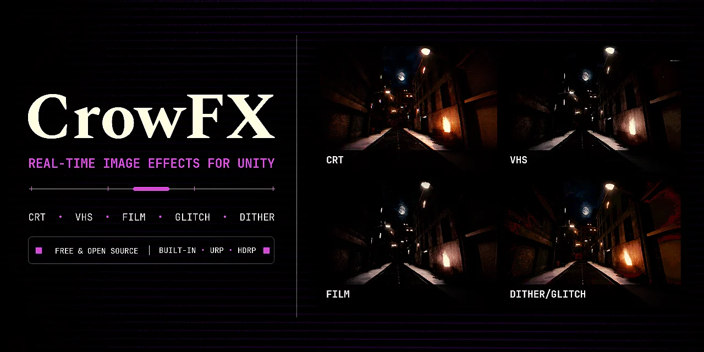

UNITYshaders, post-processing, systems

CrowPSX
PS1-style rendering for Unity · on the Asset Store
A shader suite that recreates how PS1 games looked: vertex snapping, affine texture warping and low color depth. One style across surfaces, terrain, foliage, particles, decals and the sky, with snapping that stays stable in VR.
- code
- HLSL, C#
- pipelines
- Built-in, URP

CrowFX
Free retro post-processing for Unity. 88 looks, MIT.
Free post-processing for Unity: CRT, VHS, film damage, glitches and dithering. The inspector previews each section with the real stage shader, and effects that are switched off add no render passes.
88looks
11categories
MITlicense
- pipelines
- Built-in; URP, HDRP experimental
- unity
- 2022.3 LTS or newer
- install
- OpenUPM, git URL, .unitypackage
CrowSave
Save and load system for Unity.
A save and load system for Unity. Each object captures and applies its own data, keyed by scope and ID, so two copies of a level can't overwrite each other. Destroyed objects stay destroyed after loading, unchanged objects are skipped when saving, and a small ring of in-memory checkpoints allows rewinding.
- identity
- (ScopeKey, EntityId)
- storage
- RAM layer and disk layer
- scene IDs
- GUID based, survive renames
WINDOWSC++20 · Direct3D 11
FlashGuard
Windows overlay that limits flashing light on screen.
An overlay for people sensitive to flashing light. It captures the desktop every frame, finds regions that flicker at risky rates on the GPU, and limits how fast those regions can change on screen while trying to leave normal motion alone.
experimental. Not medically validated and not certified. The README says so up front.
260/260surface checks pass, RTX 3060
0.4.0alpha 4
- DXGI desktop duplicationfreshest captured frame
- half-res GPU featureslinear RGB + ternary Census
- bounded structural matcherno optical flow
- per-cell transported statephase, period, extrema, lifetime
- full-res compositorcurrent image only
- click-through overlayexcluded from capture
RGB variation reduction on an RTX 3060. The requirement was never lowered.
WEBplain HTML, CSS and JS, no build step

StatementCheckbrowser tool
Bank CSV to Xero converter that runs in the browser.
Turns bank CSV exports into a file Xero will import, and lists every row it changed or rejected. Runs in the browser; nothing is uploaded.

crowq3server site
Site for a Quake III Arena server, with live status.
Join page and admin reference for a Quake III Arena server, with the live map, players and scores pulled from the server every 15 seconds.

CONTACT
I mostly work in Unity, on rendering and the editor tools around it. I'm looking for a full-time role in graphics, tools or web development.
I write docs for what I ship. CrowPSX has a full documentation site, and the FlashGuard README covers what still doesn't work as well as what does.
- graphics
- HLSL, Unity Built-in / URP / HDRP, Direct3D 11
- languages
- C#, C++20, JavaScript
- web
- HTML, CSS, GitHub Pages
- shipping
- Unity Asset Store, OpenUPM, GitHub Actions